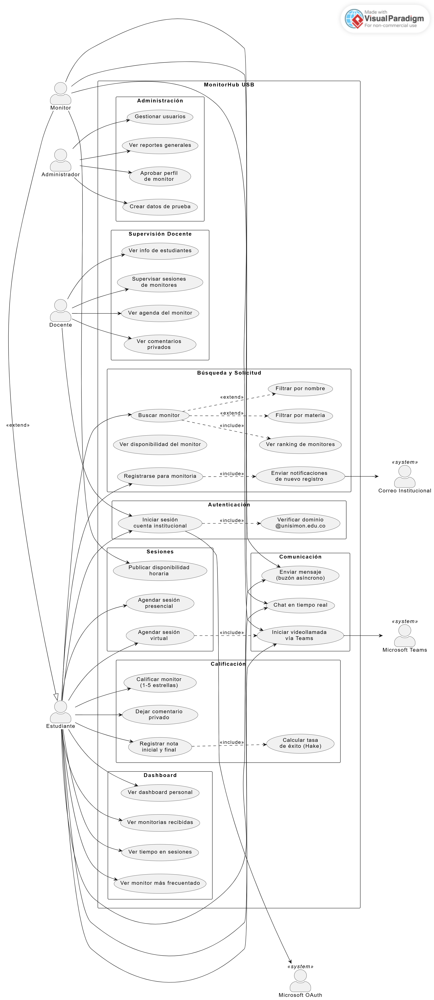
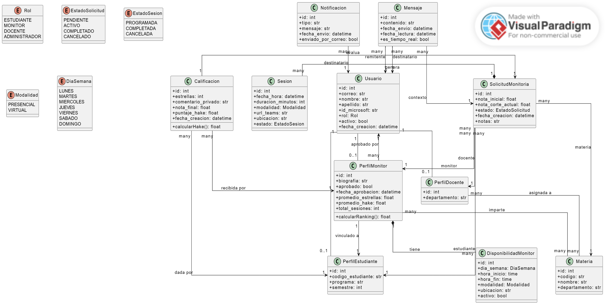
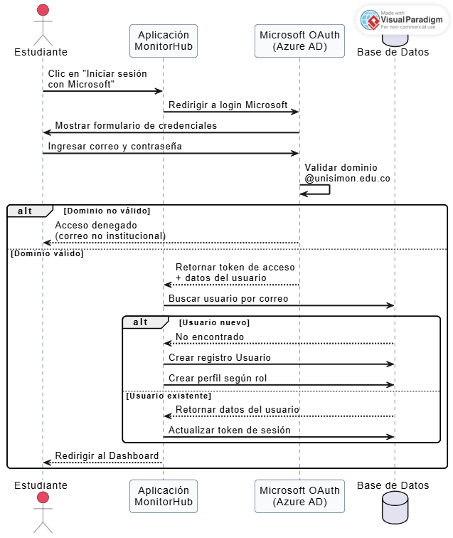
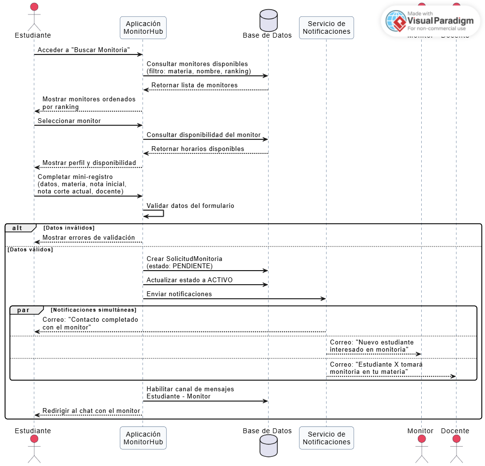
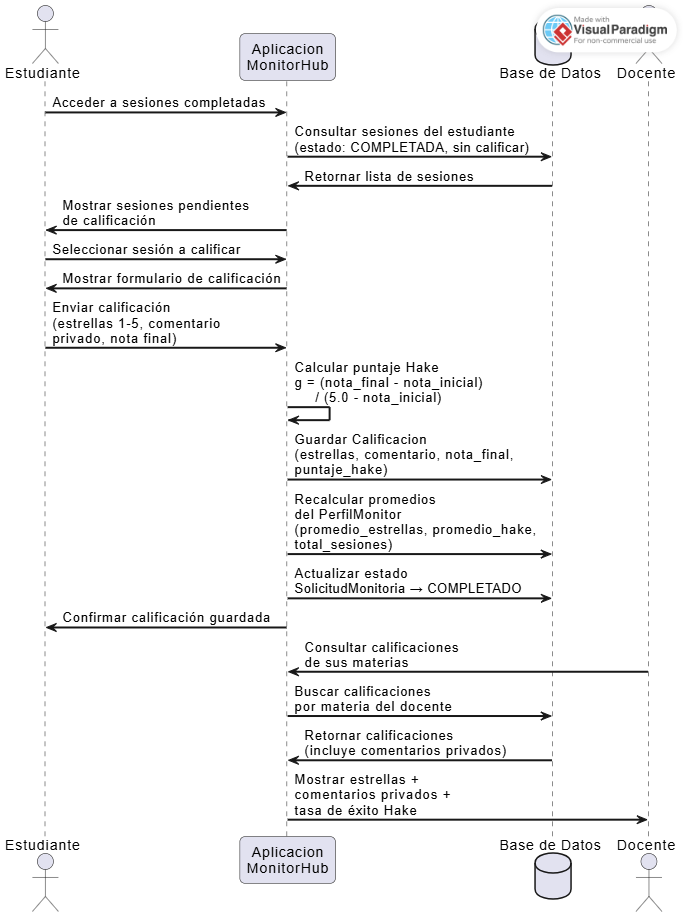
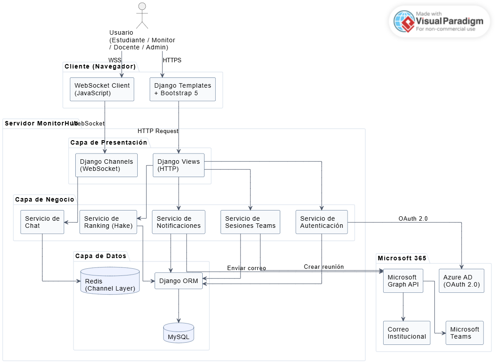

Tabla de Contenido
Descripción del Proyecto
MonitorHub USB es una plataforma web multiplataforma diseñada para la Universidad Simón Bolívar que conecta a estudiantes con monitores académicos — compañeros con habilidades pedagógicas excepcionales aprobados por la institución — y con docentes supervisores que ofrecen sesiones de tutoría directa, todo a través de buzón de mensajes y videollamadas integradas con Microsoft Teams.
El sistema gestiona dos flujos paralelos: la monitoria (estudiante → monitor, supervisada por docente) y la tutoría (estudiante → docente directamente). En ambos casos se hace seguimiento académico mediante la Ganancia Normalizada de Hake, estrellas de satisfacción y volumen de sesiones.
Objetivos
Objetivo General
Desarrollar una plataforma digital que facilite la conexión entre estudiantes, monitores académicos y docentes de la USB, optimizando los procesos de solicitud, seguimiento y evaluación de monitorias y tutorías.
Alcance
- Plataforma web responsiva (multiplataforma)
- Autenticación exclusiva con cuentas @unisimon.edu.co
- Dos flujos académicos: monitorias (estudiante→monitor) y tutorías (estudiante→docente)
- Integración con Microsoft 365 (Teams, correo)
- Sistema de evaluación con métricas académicas (Hake)
Roles y Capacidades
| Capacidad | Estudiante | Monitor | Docente | Admin |
|---|---|---|---|---|
| Iniciar sesión con Microsoft | ✔ | ✔ | ✔ | ✔ |
| Ver dashboard personal | ✔ | ✔ | ✔ | ✔ |
| Buscar y solicitar monitoria | ✔ | ✔* | ✗ | ✗ |
| Solicitar tutoría a un docente | ✔ | ✔* | ✗ | ✗ |
| Publicar disponibilidad de monitoria | ✗ | ✔ | ✗ | ✗ |
| Publicar disponibilidad de tutoría | ✗ | ✗ | ✔ | ✗ |
| Ser contactado por estudiantes | ✗ | ✔ | ✔ | ✗ |
| Ver información de estudiantes | ✗ | ✗ | ✔ | ✔ |
| Supervisar sesiones y agenda de monitores | ✗ | ✗ | ✔† | ✔ |
| Ver comentarios privados de estudiantes | ✗ | ✗ | ✔ | ✔ |
| Aprobar perfil de monitor | ✗ | ✗ | ✗ | ✔ |
| Crear datos de prueba | ✗ | ✗ | ✗ | ✔ |
* Como perfil estudiante | † Solo materias asignadas al docente
Dualidad del rol Monitor
Un monitor posee dos perfiles bajo la misma cuenta institucional. Puede alternar entre su perfil de monitor (recibe solicitudes, publica disponibilidad) y su perfil de estudiante (solicita monitorias de otras materias). La activación del perfil de monitor requiere aprobación previa del Administrador.
Flujos Principales del Sistema
3.1 Autenticación con Microsoft OAuth
3.2 Solicitud de Monitoria
3.3 Calificación de Monitor
3.4 Solicitud de Tutoría con Docente
Flujo directo estudiante → docente, independiente del flujo de monitoria. El docente publica su disponibilidad horaria y el estudiante solicita una sesión personalizada.
| Concepto | Monitoria | Tutoría Docente |
|---|---|---|
| Tutor | Monitor (estudiante aprobado) | Docente institucional |
| Supervisor | Docente asignado a la materia | No aplica (docente es el tutor) |
| Aprobación previa | Sí — el admin aprueba al monitor | No — el docente publica directamente |
| Disponibilidad | DisponibilidadMonitor | DisponibilidadDocente (con materia opcional) |
| Modelo de solicitud | SolicitudMonitoria | SolicitudTutoria |
| Calificación con Hake | Sí — afecta el ranking del monitor | No en MVP |
Sistema de Ranking y Evaluación
El sistema evalúa el desempeño de cada monitor mediante tres indicadores combinados en un score compuesto visible en el ranking público.
4.1 Ganancia Normalizada de Hake
Modelo estadístico proveniente de la investigación en educación (Hake, 1998). Mide cuánto mejoró el estudiante en relación a cuánto podía mejorar, normalizando el efecto del punto de partida.
Fórmula de Ganancia Normalizada de Hake
Resultado en rango [−1, 1]
| Rango de g | Interpretación | Ejemplo |
|---|---|---|
| g ≥ 0.7 | Ganancia alta — monitoria muy efectiva | Nota: 2.0 → 4.5 | g = 0.83 |
| 0.3 ≤ g < 0.7 | Ganancia media — monitoria efectiva | Nota: 3.0 → 4.0 | g = 0.50 |
| g < 0.3 | Ganancia baja — monitoria con poca incidencia | Nota: 3.5 → 3.8 | g = 0.20 |
| g < 0 | Retroceso — penaliza el ranking del monitor | Nota: 3.5 → 3.2 | g = −0.20 |
4.2 Score Compuesto del Ranking
| Componente | Peso | Descripción | Visibilidad |
|---|---|---|---|
| Estrellas (1–5) | 40% | Promedio de calificaciones por sesión | Pública |
| Tasa de éxito Hake | 40% | Promedio de g entre todos los estudiantes atendidos | Pública |
| Volumen | 20% | Total de monitorias completadas (normalizado) | Pública |
| Comentarios escritos | — | Retroalimentación textual del estudiante | Solo docente |
Diagramas UML
5.1 Diagrama de Casos de Uso
Representa los actores del sistema y las funcionalidades disponibles para cada uno, junto con sus relaciones de inclusión y extensión.

Figura 1. Diagrama de Casos de Uso del sistema MonitorHub USB.
5.2 Diagrama de Clases
Muestra las entidades del sistema, sus atributos, métodos y las relaciones entre ellas (asociación, composición, herencia).

Figura 2. Diagrama de Clases: Entidades y relaciones del dominio.
5.3 Diagramas de Secuencia
Secuencia 1 — Autenticación con Microsoft OAuth

Figura 3. Diagrama de Secuencia: Flujo de autenticación con Microsoft OAuth.
Secuencia 2 — Solicitud de Monitoria

Figura 4. Diagrama de Secuencia: Flujo de solicitud de monitoria.
Secuencia 3 — Calificación de Monitor

Figura 5. Flujo de secuencia para el proceso de calificación de una monitoria.
Modelo de Negocio — Business Model Canvas
MonitorHub USB es una plataforma institucional sin fines de lucro. El valor generado se mide en impacto académico y reducción de deserción universitaria.
Socios Clave
- Universidad Simón Bolívar
- Microsoft (Azure AD + Teams)
- Docentes supervisores
- Departamento TI - USB
Actividades Clave
- Gestión de la plataforma
- Aprobación de monitores
- Matching estudiante-monitor
- Seguimiento académico (Hake)
- Reportes para docentes
Recursos Clave
- Plataforma Django + MySQL
- Licencias Microsoft 365
- Monitores capacitados
- Servidor universitario
Propuesta de Valor
- Estudiantes: Apoyo académico personalizado y mejora medible
- Monitores: Visibilidad y experiencia pedagógica
- Docentes: Seguimiento en tiempo real
- USB: Reducción de deserción
Relación con Clientes
- Autoservicio digital
- Comunidad con ranking público
- Chat directo
- Supervisión docente
Canales
- Plataforma web responsiva
- Correo @unisimon.edu.co
- Microsoft Teams
- Dashboard por rol
Segmentos de Clientes
- Estudiantes USB con dificultades académicas
- Monitores con alto rendimiento
- Docentes supervisores
- Administración universitaria
Estructura de Costos
- Ingenieria y mantenimiento de la plataforma
- Infraestructura servidor universitario
- Microsoft 365 (cubierto por licencia académica)
- Reconocimiento a monitores (créditos / certificados)
Fuentes de Valor (no monetario)
- Mejora en indicadores académicos institucionales
- Reducción de la tasa de deserción universitaria
- Certificación y reconocimiento para monitores
- Ahorro frente a tutorías externas contratadas
Arquitectura Técnica
7.1 Stack Tecnológico
7.2 Capas de la Arquitectura

Figura 6. Diagrama de Componentes: Arquitectura por capas del sistema.
7.3 Estructura del Proyecto Django
7.4 Guía de Despliegue
Entorno local (desarrollo — SQLite):
Servidor universitario (producción):
| # | Paso | Detalle |
|---|---|---|
| 1 | Instalar dependencias del sistema | Python 3.11+, MySQL, Redis, Nginx |
| 2 | Configurar variables de entorno | SECRET_KEY, DATABASE_URL, REDIS_URL, credenciales Azure AD |
| 3 | Registrar la app en Azure AD | Agregar el dominio del servidor como Redirect URI autorizado |
| 4 | Iniciar servidor ASGI | Daphne detrás de Nginx para soportar HTTP y WebSocket |
| 5 | Configurar SSL | Certificado institucional para HTTPS obligatorio (OAuth) |